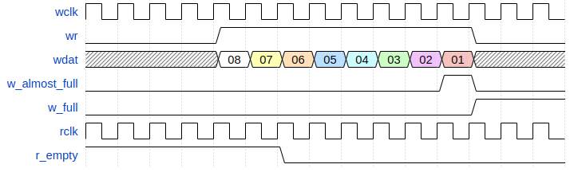
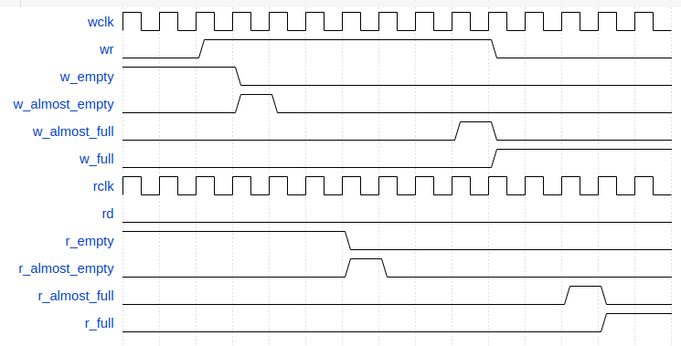
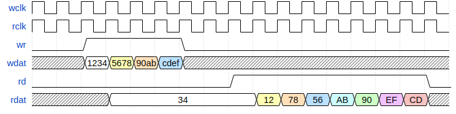
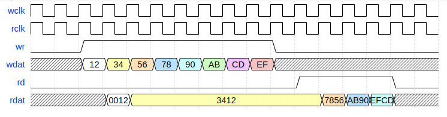

Т.к. ширина входных и выходных данных может отличаться, то ширина ячейки буфера является минимальной из ширин входных и выходных данных. Если ширина входных данных больше ширины выходных, то за 1 процедуру записи происходит заполнение нескольких ячеек памяти. Если ширина выходных данных больше ширины входных, то за 1 процедуру чтения происходит опустошение нескольких ячеек памяти.
Запись буфера
Запись данных с wdat осуществляется при wr=0b1, если w_full=0b0 на нарастающем фронте wclk. Одновременно происходит инкремент адреса записи буфера.
Ошибка записи буфера
Флаг ошибки записи в буфер w_overflow выставляется при попытке записи в заполненный буфер, т.е. если одновременно w_full=0b1 и wr=0b1, на нарастающем фронте wclk. При возникновении ошибки записи, данные записываемые в буфер теряются. Блок остается в рабочем состоянии и может использоваться без дополнительных действий. Для сброса флага w_overflow нужно установить clr_of.
Чтение буфера
Чтение данных осуществляется при rd=0b1 и r_empty=0b0. Данные из буфера (на выходе rdat) должны быть захвачены до следующего нарастающего фронта rclk (на котором происходит инкремент адреса чтения буфера) после установки rd.
Ошибка чтения буфера
Ошибка чтения буфера происходит при попытке прочитать пустой буфер (rd=0b1 и r_empty=0b1) на нарастающем фронте rclk. При этом происходит выставление флага r_underflow. Блок остается в рабочем состоянии и может использоваться без дополнительных действий. Для сброса флага r_underflow нужно установить clr_uf.

Флаги
Флаг заполненности буфера w_full выставляется, если количество свободных ячеек в буфере меньше, чем количество записываемых за 1 процедуру записи ячеек. Флаг w_afull устанавливается, если в ehl_fifo может быть записано еще одно значение.
Установка флага w_full. WIDTH_DIN=WIDTH_DOUT=8, DEPTH=8. SYNC_STAGE=1:
Флаг опустошения буфера r_empty выставляется, если количество заполненных ячеек в буфере меньше, чем количество читаемых за 1 процедуру чтения ячеек. Флаг r_aempty устанавливается, если из ehl_fifo может быть прочитано еще одно значение.
Установка флага empty. WIDTH_DIN=WIDTH_DOUT=8, DEPTH=8. SYNC_STAGE=1:
Синхронизация wclk и rclk
Интерфейсы записи и чтения буфера работают на собственных тактовых частотах wclk и rclk. Тактовые сигналы могут быть асинхронны друг другу. Передача данных между доменами синхросигналов происходит при формировании флагов w_full / w_empty и r_full / r_empty. Флаги заполненности w_full и опустошенности w_empty формируются в блоке ehl_fifo_wc. Для их формирования используется адрес записи и синхронизованная копия адреса чтения. Из этого следует:
Установка флагов full/empty при записи в буфер. WIDTH_DIN=WIDTH_DOUT=8, DEPTH=8. SYNC_STAGE=2:
Флаги заполненности r_full и опустошенности r_empty формируются в блоке ehl_fifo_rc. Для их формирования используются адрес чтения и синхронизованная копия адреса записи. Из этого следует:
Установка флагов full/empty при чтении буфера. WIDTH_DIN=WIDTH_DOUT=8, DEPTH=8. SYNC_STAGE=2:
Синхронизованные копии адресов используются во избежание проблем с метастабильностью. Они формируются путем применения сдвигового регистра, количество сдвигов (стадий синхронизации) в котором определяется пользователем (см. параметр SYNC_STAGE).
Для исключения влияния неодновременности захвата адреса при передаче между доменами синхросигналов используется код Грэя. В момент захвата может переключаться не более 1 бита адреса. В результате может быть захвачено одно из двух значений адреса: текущее или предыдущее. Таким образом, ошибки с определением адреса не возникнет, может лишь появиться задержка на 1 такт при формировании флагов w_full, w_empty, r_empty и r_full (и almost флагов).
Количество стадий синхронизации должно выбираться из следующих соображений:
Задержка синхронизации при формировании флагов full и empty. SYNC_STAGE = 1 (синий), 2 (красный), 3 (оранжевый):

Порядок следования данных
Если ширины входных и выходных данных равны, то первым читается первое записанное значение. Если ширина входных данных больше ширины выходных, то первым читаются младшие разряды записанного значения.
Порядок следования бит. WIDTH_DIN=16, WIDTH_DOUT=8:
Если ширина выходных данных больше ширины входных, то первое записанное значение читается в младших разрядах.
Порядок следования бит. WIDTH_DIN=8, WIDTH_DOUT=16:
